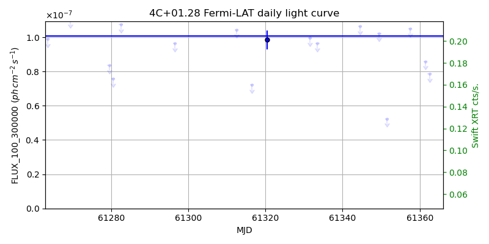
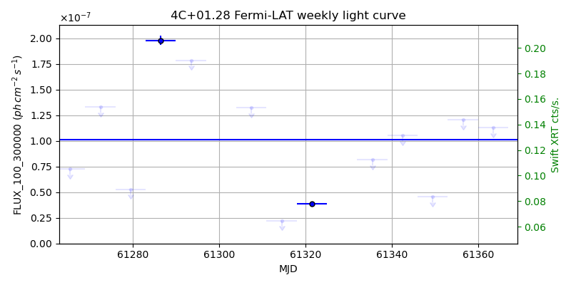
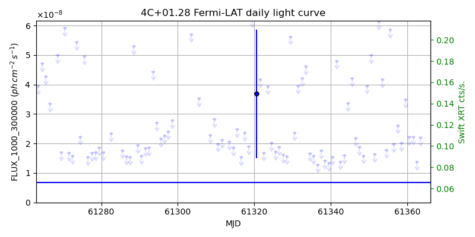
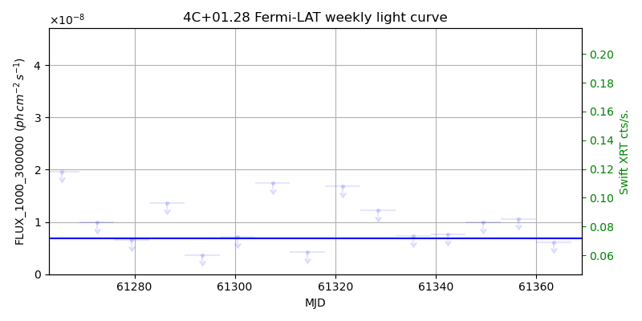

LAT Lightcurve site: https://fermi.gsfc.nasa.gov/ssc/data/access/lat/msl_lc/source/4C_p01d28
Swift site: https://www.swift.psu.edu/monitoring/source.php?source=4C+01.28
NED: Query
Time of last update of this page: UT: 2026-11-28 16:22 (MJD: 61372.682)
| Property | Value |
|---|---|
| R.A. | 10:58:29.52 |
| Dec. | 1:33:57.6 |
| z | 0.894 |
| 3FGL SpectrumType | LogParabola |
| 3FGL PL Index | |
| 3FGL Flux_100_300000 | 1.01e-07 1 / (s cm2) |
| 3FGL Flux_1000_300000 | 6.87e-09 1 / (s cm2) |
| 3FGL Flux >200 GeV | 4.85e-12 1 / (s cm2) |
| 3FGL Extrap. Crab >200 GeV | 0.02 |
| 3FGL Flux After EBL Absorption >200GeV | 1.29e-13 1 / (s cm2) |
| 3FGL EBL Crab Fraction >200GeV | 0.00 |

| MJD | dMJD | Flux | dFlux | Frac3FGL | FracCrab>200GeV | EBLFracCrab>200GeV |
|---|---|---|---|---|---|---|
| 61367.50 | 0.50 | 3.89e-07 | 0.00e+00 | 0.00 | 0.00 | 0.00 |
| 61368.50 | 0.50 | 1.16e-07 | 0.00e+00 | 0.00 | 0.00 | 0.00 |
| 61369.50 | 0.50 | 1.63e-07 | 0.00e+00 | 0.00 | 0.00 | 0.00 |
| 61370.50 | 0.50 | 2.62e-07 | 0.00e+00 | 0.00 | 0.00 | 0.00 |
| 61371.50 | 0.50 | 1.38e-07 | 0.00e+00 | 0.00 | 0.00 | 0.00 |

| MJD | dMJD | Flux | dFlux | Frac3FGL | FracCrab>200GeV | EBLFracCrab>200GeV |
|---|---|---|---|---|---|---|
| 61335.50 | 3.50 | 8.16e-08 | 0.00e+00 | 0.00 | 0.00 | 0.00 |
| 61342.50 | 3.50 | 1.05e-07 | 0.00e+00 | 0.00 | 0.00 | 0.00 |
| 61349.50 | 3.50 | 4.57e-08 | 0.00e+00 | 0.00 | 0.00 | 0.00 |
| 61356.50 | 3.50 | 1.20e-07 | 0.00e+00 | 0.00 | 0.00 | 0.00 |
| 61363.50 | 3.50 | 1.13e-07 | 0.00e+00 | 0.00 | 0.00 | 0.00 |

| MJD | dMJD | Flux | dFlux | Frac3FGL | FracCrab>200GeV | EBLFracCrab>200GeV |
|---|---|---|---|---|---|---|
| 61367.50 | 0.50 | 3.21e-08 | 0.00e+00 | 0.00 | 0.00 | 0.00 |
| 61368.50 | 0.50 | 1.74e-08 | 0.00e+00 | 0.00 | 0.00 | 0.00 |
| 61369.50 | 0.50 | 2.30e-08 | 0.00e+00 | 0.00 | 0.00 | 0.00 |
| 61370.50 | 0.50 | 1.26e-08 | 0.00e+00 | 0.00 | 0.00 | 0.00 |
| 61371.50 | 0.50 | 1.80e-08 | 0.00e+00 | 0.00 | 0.00 | 0.00 |

| MJD | dMJD | Flux | dFlux | Frac3FGL | FracCrab>200GeV | EBLFracCrab>200GeV |
|---|---|---|---|---|---|---|
| 61335.50 | 3.50 | 7.27e-09 | 0.00e+00 | 0.00 | 0.00 | 0.00 |
| 61342.50 | 3.50 | 7.56e-09 | 0.00e+00 | 0.00 | 0.00 | 0.00 |
| 61349.50 | 3.50 | 9.91e-09 | 0.00e+00 | 0.00 | 0.00 | 0.00 |
| 61356.50 | 3.50 | 1.06e-08 | 0.00e+00 | 0.00 | 0.00 | 0.00 |
| 61363.50 | 3.50 | 6.15e-09 | 0.00e+00 | 0.00 | 0.00 | 0.00 |
--------------------------------------------------------- Using user-supplied coords: 10:58:29.52 1:33:57.6 2000 --------------------------------------------------------- FLWO UT night of: 2026-11-29 Local Sid. @ Midnight: 04:08 Sunset (-15.0) (local, UT): 18:31 01:31 Sunrise (-15.0) (local, UT): 05:53 12:53 Moonrise (local, UT): 21:57 04:57 Moonset (local, UT): Moon phase: 0.72 --------------------------------------------------------- AzTime LSID UT Obj_el Obj_az Mn_el Mn_az Sep. --------------------------------------------------------- 18:31 22:39 01:31 -56.5 350.6 -32.9 32.1 36.9 19:01 23:09 02:01 -56.8 4.3 -29.4 38.9 36.5 19:31 23:39 02:31 -55.6 17.7 -25.4 45.0 36.1 20:01 00:09 03:01 -53.0 29.8 -21.0 50.6 35.8 20:31 00:39 03:31 -49.3 40.3 -16.2 55.6 35.4 21:01 01:09 04:01 -44.8 49.1 -11.1 60.2 35.1 21:31 01:39 04:31 -39.7 56.6 -5.4 64.5 34.8 22:01 02:09 05:01 -34.2 63.0 0.4 68.5 34.4 22:31 02:39 05:31 -28.3 68.5 5.8 72.2 34.2 23:01 03:10 06:01 -22.3 73.5 11.6 75.8 33.9 23:31 03:40 06:31 -16.1 78.0 17.5 79.4 33.6 00:01 04:10 07:01 -9.8 82.2 23.6 82.9 33.3 00:31 04:40 07:31 -2.1 86.2 29.7 86.5 33.1 01:01 05:10 08:01 3.2 90.2 35.8 90.3 32.8 01:31 05:40 08:31 9.5 94.1 42.0 94.4 32.6 02:01 06:10 09:01 15.8 98.3 48.1 99.1 32.4 02:31 06:40 09:31 22.1 102.6 54.2 104.7 32.2 03:01 07:10 10:01 28.2 107.3 60.1 111.7 32.0 03:31 07:40 10:31 34.3 112.6 65.6 121.1 31.8 04:01 08:10 11:01 40.0 118.7 70.5 134.7 31.6 04:31 08:40 11:31 45.4 125.8 74.0 154.7 31.4 05:01 09:11 12:01 50.3 134.3 75.2 181.1 31.2 05:31 09:41 12:31 54.5 144.6 73.6 206.8 31.0 05:53 10:02 12:53 56.9 153.2 71.0 221.2 30.8 --------------------------------------------------------- Dark hours >55 deg.: 0.00